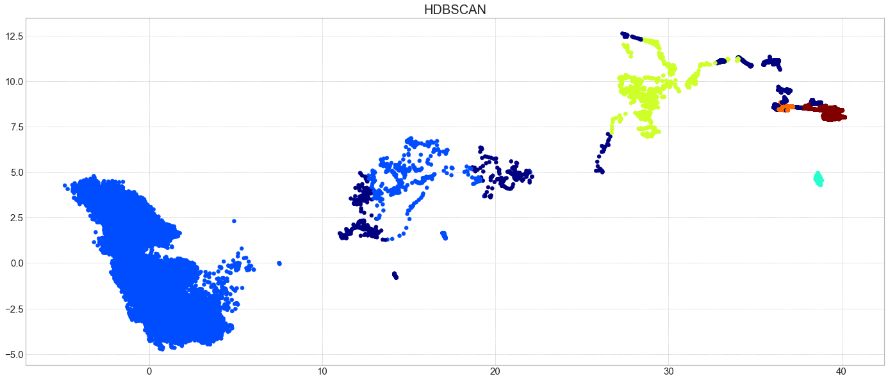
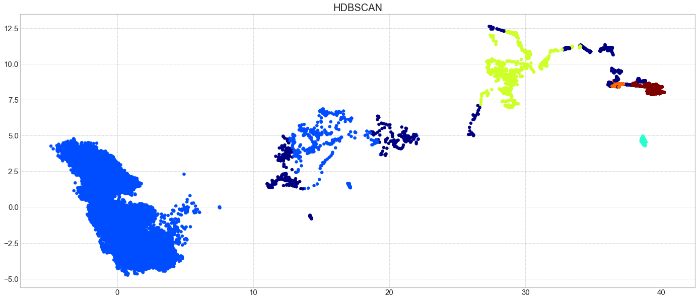
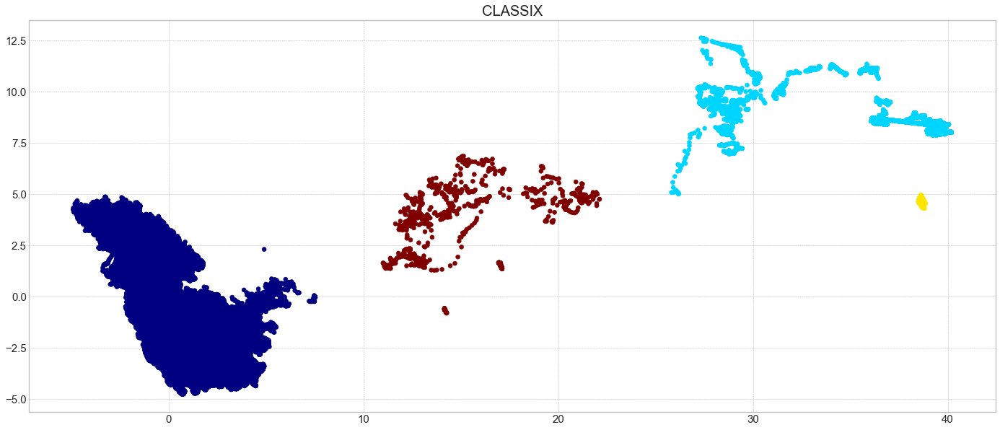
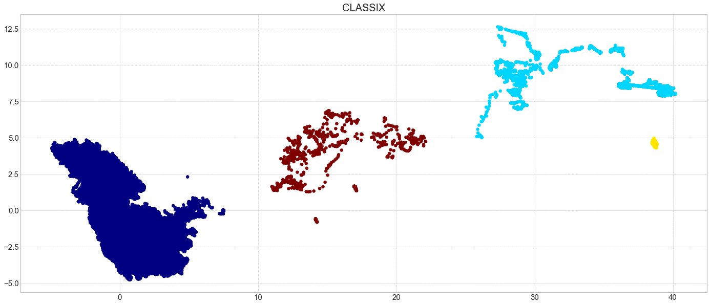
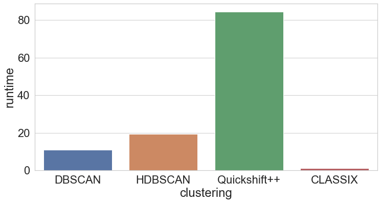
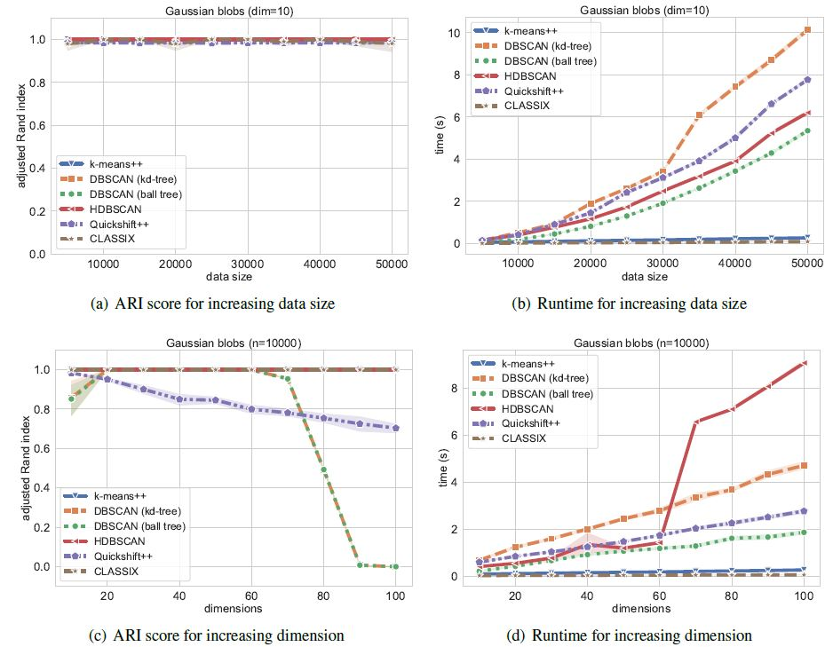

Performance Comparison
Here, we can compare CLASSIX with the most typical and well-used density clustering algorithms DBSCAN, HDBSCAN and Quickshift++. We perform this experiment on Kamil dataset, and synthetic Gaussian blobs clusters.
import time
import hdbscan
import warnings
import numpy as np
import pandas as pd
from sklearn import metrics
from sklearn.cluster import DBSCAN
import matplotlib.pyplot as plt
from classix import CLASSIX, load_data
from quickshift.QuickshiftPP import * # download from https://github.com/google/quickshift
Then we load the data:
data = load_data('vdu_signals') # load the data
print(data.shape) # (2028780, 2)
This data has more than 2 million objects, which is very challenging for most clustering algorithm. Our experiments were runing on the environment settings:
Dell PowerEdge R740 Server
2x Intel Xeon Silver 4114 2.2G (total 20 cores, 40 threads)
2x NVIDIA Tesla P100 16GB GPU
1.5 TB RAM (=1536 GB RAM)
1.8 TB disk space (expandable)
The DBSCAN, HDBSCAN, Quickshift++ fail in this experiment (runtime > 24 hr) while CLASSIX use around 1.2 seconds for clustering of whole data. Therefore, to compare the the four algorithms (ensure they can finish clustering within a day), we need to preprocess the data for downsampling:
# This block of code is provided by Kamil Oster
final_len = 100000
outliers_position = np.where(X_pca[:,0] > 7.5)[0]
no_outliers_position = np.delete(np.arange(0, len(X_pca[:,0])), outliers_position, axis=0)
outlier_len = len(outliers_position)
data_no_outliers_length = int(final_len - outlier_len)
data_outliers = X_pca[outliers_position, :]
data_no_outliers = np.delete(X_pca, outliers_position, axis=0)
random_integers = np.arange(0, len(no_outliers_position))
np.random.shuffle(random_integers)
data_no_outliers_out = data_no_outliers[random_integers[data_no_outliers_length:],:]
data_no_outliers = data_no_outliers[random_integers[:data_no_outliers_length],:]
X = np.concatenate((data_no_outliers, data_outliers))
print(X.shape) # (100000, 2)
Then we employ the algorithms except CLASSIX on the downsampling data while employ CLASSIX clustering on the whole data, and get their average runtime for comparison:
sample_size = 10 # each algorithm's running repeats for 10 times
sum_time = 0
timing = []
for i in range(sample_size):
st = time.time()
dbscan = DBSCAN(eps=0.7, min_samples=6)
dbscan.fit(X)
et = time.time()
sum_time = sum_time + et - st
timing.append(sum_time/sample_size)
print("Average consume time: ", sum_time/sample_size)
plt.figure(figsize=(24,10))
plt.scatter(X[:,0], X[:,1], c=dbscan.labels_, cmap='jet')
plt.tick_params(axis='both', labelsize=15)
plt.title('DBSCAN', fontsize=20)
plt.savefig('DBSCAN.png', bbox_inches='tight')
plt.show()
sum_time = 0
for i in range(sample_size):
st = time.time()
_hdbscan = hdbscan.HDBSCAN(min_cluster_size=1000, core_dist_n_jobs=1)
hdbscan_labels = _hdbscan.fit_predict(X)
et = time.time()
sum_time = sum_time + et - st
timing.append(sum_time/sample_size)
print("Average consume time: ", sum_time/sample_size)
plt.figure(figsize=(24,10))
plt.scatter(X[:,0], X[:,1], c=hdbscan_labels, cmap='jet')
plt.tick_params(axis='both', labelsize=15)
plt.title('HDBSCAN', fontsize=20)
plt.savefig('HDBSCAN.png', bbox_inches='tight')
plt.show()
sum_time = 0
for i in range(sample_size):
st = time.time()
quicks = QuickshiftPP(k=800, beta=0.7)
quicks.fit(X.copy(order='C'))
quicks_labels = quicks.memberships
et = time.time()
sum_time = sum_time + et - st
timing.append(sum_time/sample_size)
print("Average consume time: ", sum_time/sample_size)
plt.figure(figsize=(24,10))
plt.scatter(X[:,0], X[:,1], c=quicks_labels, cmap='jet')
plt.tick_params(axis='both', labelsize=15)
plt.title('Quickshift++', fontsize=20)
plt.savefig('Quickshiftpp.png', bbox_inches='tight')
plt.show()
sum_time = 0
for i in range(sample_size):
st = time.time()
clx = CLASSIX(sorting='pca', radius=0.3, verbose=0, group_merging='distance')
clx.fit_transform(data)
et = time.time()
sum_time = sum_time + et - st
timing.append(sum_time/sample_size)
print("Average consume time: ", sum_time/sample_size)
plt.figure(figsize=(24,10))
plt.scatter(data[:,0], data[:,1], c=clx.labels_, cmap='jet')
plt.tick_params(axis='both', labelsize=15)
plt.title('CLASSIX', fontsize=20)
plt.savefig('CLASSIX.png', bbox_inches='tight')
plt.show()
 

 

We can simply visualize the runtime:
import seaborn as sns
data = pd.DataFrame()
data['clustering'] = ['DBSCAN', 'HDBSCAN', 'Quickshift++', 'CLASSIX']
data['runtime'] = timing
plt.figure(figsize=(12,6))
sns.set(font_scale=2, style="whitegrid")
ax = sns.barplot(x="clustering", y="runtime", data=data)
plt.savefig('results/runtime.png', bbox_inches='tight')
The runtime bar plot is as below, we can see that CLASSIX achieves the fastest speed even if it runs with the whole data.
Synthetic Gaussian blobs test can be refer to the paper The test is referenced from https://hdbscan.readthedocs.io/en/latest/performance_and_scalability.html
